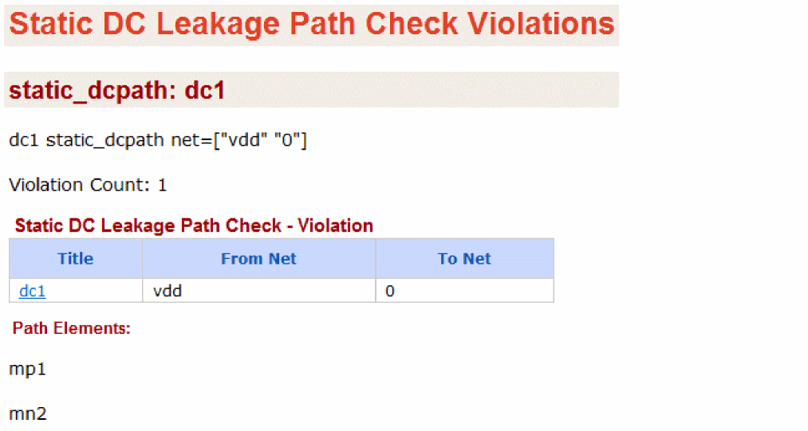

Static DC Leakage Path Check (static_dcpath)
Spectre Syntax
title static_dcpath net=[n1 n2 ...] vnth=<value> vpth=<value> pwl_time=<value> error_limit=<value> <rpt_node=no|all|top|selected>
SPICE Syntax
.cck title static_dcpath net=[n1 n2 ...] vnth=<value> vpth=<value> pwl_time=<value> error_limit=<value> <rpt_node=no|all|top|selected>
Description
Reports the always conducting paths between the power supply nodes. If more than two nets are specified, Spectre checks the leakage path between each net combination. For example, if net=[vdc1 vdc2 0] is specified, then the conducting path between vdc1 and vdc2, vdc1 and 0, and vdc2 and 0 is checked.
The results are written to a file with the extension static.xml, which can be viewed with a Web browser.
Arguments
|
net
|
Hierarchical node names between which the leakage path is checked. Wildcarding is not allowed. All combination of nets are checked. Default is none.
|
|
vnth
|
NMOS threshold voltage. This value is used to calculate the voltage drop across a NMOS channel during voltage propagation (the default value is 0.5 v).
|
|
vpth
|
PMOS threshold voltage. This value is used to calculate the voltage drop across a PMOS channel during voltage propagation (the default value is -0.4 v).
|
|
pwl_time
|
If specified, all pwl sources are considered constant sources with a value equal to the voltage of the pwl source at pwl_time. Default is infinity.
|
|
rpt_node
|
Report node voltages. If set to no, no node voltages are reported. If set to all, all node voltages are reported. If set to top, voltages of only the top-level nodes are reported. If set to selected, voltages of only the specified nodes are reported. The report is written to a file named <netlist_name>.<check_name>.nv.
Possible values are no, all, top, and selected. The default value is no.
|
|
error_limit
|
Maximum number of errors to be reported. Default is 10000.
|
Example
Spectre Syntax
dc1 static_dcpath net=["vdd 0"]
SPICE Syntax
dc1 static_dcpath net=["vdd 0"]
The above command will report potential DC leakage paths between the power supply nodes vdd and 0.The following is an example of the report that is displayed in the Web browser:

Related Topics
Static Checks
Return to top